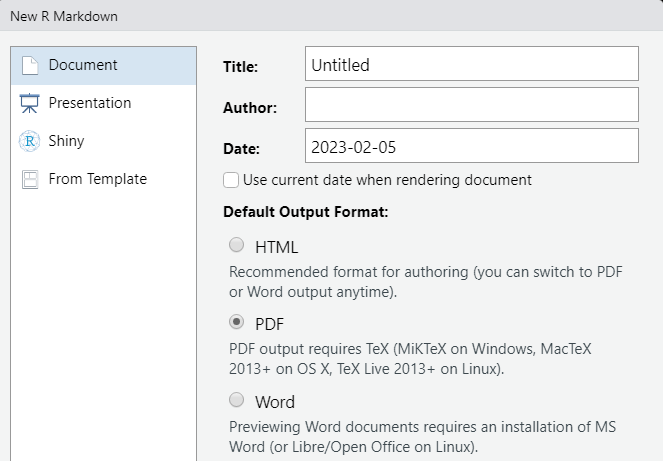
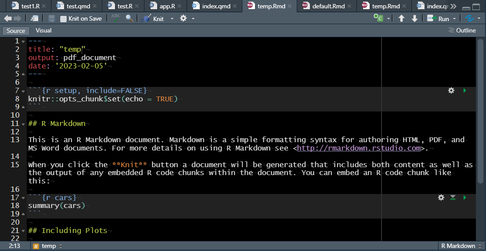
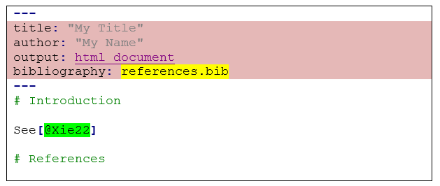

Report with R Markdown ¶ ¶
Report data analysis with R Markdown authoring framework
¶ ¶ Theory
February 2023
Create a new document
In RStudio:
File > New file > R Markdown...

The options (Title, Author) can be changed later on the YAML header. Let HTML as the default output format.

A new document is created:

Run the new document with knit, it will launch the render
Navigate

Use RStudio tools
 knit when save the document
knit when save the document
 check spelling
check spelling
 knit the document
knit the document
 run Visual R Markdown + other options
run Visual R Markdown + other options
 new editing tools
new editing tools
 create a new code chunk (R, Bash, D3, Python, etc.)
create a new code chunk (R, Bash, D3, Python, etc.)
 run a part or the whole document
run a part or the whole document
 publish the document
publish the document
 run
run {kind=link}
Markdown syntax
Markdown is an easy-to-write plain text syntax used by different code-oriented frameworks:
 Markdown basic syntax and Markdown online editor
Markdown basic syntax and Markdown online editor
 Pandoc converter is an extension of Markdown, really usefull for text conversions (Markdown to HTML, LaTex to Markdown, etc.)
Pandoc converter is an extension of Markdown, really usefull for text conversions (Markdown to HTML, LaTex to Markdown, etc.)
Tables
- simple table
| Syntax | Description |
| --- | ----------- |
| Header | Title |
| Paragraph | Text |and
| Syntax | Description |
| ----------- | ----------- |
| Header | Title |
| Paragraph | Text |produce the same result:
| Syntax | Description |
|---|---|
| Header | Title |
| Paragraph | Text |
- alignements
| Left | Center | Right |
| :--- | :----: | ---: |
| Header | Title | Here's this |
| Paragraph | Text | And more || Left | Center | Right |
|---|---|---|
| Header | Title | Here’s this |
| Paragraph | Text | And more |
 Table are often data structure difficult to layout. For complex tables you will need to use code chunks, e.g. kable() from {
Table are often data structure difficult to layout. For complex tables you will need to use code chunks, e.g. kable() from {knitr} with kable_styling() from {kableExtra}
Images
These coding give the same results (Markdown and HTML):
- online images (Markdown and HTML)
{width=100px}
<img src="https://raw.githubusercontent.com/zoometh/oxford/main/R4A/www/logo.png" alt="" width=100> 

- local images (Markdown and HTML)
{width=100px}
<img src="www/logo.png" alt="" width=100>
Spaces and end of lines
Extra spaces (HTML only)
-
 means 4 spaces (= a tabulation) -
 means 2 spaces -
means 1 space
End of line (<br> in HTML) with 2 or more spaces and return, for example:

'Reconnais-toi
Cette adorable personne c'est toi
Sous le grand chapeau canotier
Oeil
Nez
Ta Bouche
Voici l’ovale de ta figure
Ton cou Exquis' (Apollinaire, 1913) ‘Reconnais-toi
Cette adorable personne c’est toi
Sous le grand chapeau canotier
Oeil Nez
Ta Bouche
Voici l’ovale de ta figure
Ton cou Exquis’ (Apollinaire, 1913)
Hyperlinks
- to text
Report with R Markdown, part 2: [Practice](https://zoometh.github.io/oxford/R4A/2_R Markdown_Practice)
Report with R Markdown, part 2: Practice
- to an image
[{width=70px}](https://www.unipi.it/index.php/humanities/item/16574-r4rchaeologists)
 Hyperlinks can also be done with HTML/CSS
Hyperlinks can also be done with HTML/CSS
Bookmarks
After this theoretical part, you will have to [practice](#practice)
After this theoretical part, you will have to practice
The reference section, ‘Practice’, appears like that:

Cross-referencing
Cite and reuse variables, figures, tables, sections, etc., through your document
 In the following verbatim blocks we use simple quotes (
In the following verbatim blocks we use simple quotes (
Variables
Variables are called like this: ‘r variable_name’

'(...) the Furze Platt dataset counts 'r number.of.axes' described by 'r ncol(Handaxes)'. The maximal length (L = 'r max(Handaxes$L)') (...)' ‘(…) the Furze Platt dataset counts 600 described by 8. The maximal length (L = 242) (…)’
Figures

Maximum Length/Maximum breadth in cm
'(...) the distribution of the maximum length (L) and maximum breadth (B) shows a R^2^ = 'r round(model$coefficients[2], 2)', Fig. \@ref(fig:maxLmaxB)) (...)' ‘(…) the distribution of the maximum length (L) and maximum breadth (B) shows a R2 = 0.42, Fig. @ref(fig:maxLmaxB)) (…)’
Bibliographic references
- file
.bibreferenced in the YAML header


- cross citation in text
| code in R Markdown | Render |
|---|---|
@Xie22 |
Xie (2022) |
[@Xie22] |
(Xie 2022) |
[credits: @Xie22] |
(credits: Xie 2022) |
published by Yihui Xie [-@Xie20; -@Xie22] |
published by Yihui Xie (2020; 2022) |
| … | … |
 Bibliographies and citations (Xie, Dervieux, and Riederer 2020)
Bibliographies and citations (Xie, Dervieux, and Riederer 2020)
Code chunks
Code chunks, or chunks, are the placeholders for the coding part of the document

Header
The chunk header is used to set the output options (show code, size of the output image, alignement, etc.). The first top chunk (the first one in the document) allows to set these options for all other chunks, e.g. knitr::opts_chunk$set(echo = TRUE) will ‘echoing’ all chunks unless you change these options in the following headers
graphical interface for options
 run the previous chunks but not this one
run the previous chunks but not this one
 run this chunk
run this chunk
Images
Images can be render with knitr::include_graphics("path/to/image")

Fibulae measurements (Hodson, 1970)
YAML part

This is the document header, it contains the metadata (e.g, Title, Authors, date) and the document configuration (e.g. HTML or PDF rendering, table of content). It is composed on key-value pairs:
title: Title
author: Author
date:
"03/02/2022"
“03/02/2022”
"'r format(Sys.time(), '%D')'"
“02/05/23”
"'r format(Sys.time(), '%d %B %Y')'"
“05 February 2023”
…
output:
html_document
pdf_document
…
pdf_document:
toc: yes
toc: table of contents
toc: yes
toc_depth: 4
toc_float:
collapsed: no
…
bibliography: bibliographical references, BibTex format (e.g. https://github.com/zoometh/oxford/blob/main/R4A/references.bib)
…
Styling
| code in R Markdown (= HTML) | Render |
|---|---|
<span style='font-size: 30px'>Big font</span> |
Big font |
<b>bolded</b> |
bolded |
<span style="color:red">red</span> |
red |
| … | … |
Customize the document with CSS layouts like <notes>this CSS element with a dodgerblue for background and white for text</notes> here: https://github.com/zoometh/oxford/blob/main/R4A/styles.css Customize the document with CSS layouts like
 The CSS file is here: https://github.com/zoometh/oxford/blob/main/R4A/styles.css
The CSS file is here: https://github.com/zoometh/oxford/blob/main/R4A/styles.css
Plots 3D
With the {rgl} package
library(rgl)
options(rgl.useNULL = TRUE) # avoid the popup RGL device
nb.samp <- 12
# 12 graves with the numerous fibulae
Fibulae.nbGrave <- Fibulae %>%
count(Grave) %>%
arrange(-n) %>%
slice_head(n = nb.samp)
Fibulae.samp <- Fibulae[Fibulae$Grave %in% Fibulae.nbGrave$Grave, ]
# rainbow colors by graves
Fibulae.samp$color <- rainbow(nb.samp)[as.numeric(as.factor(Fibulae.samp$Grave))]
plot3d(
x = Fibulae$Length,
y = Fibulae$FA,
z = Fibulae$BH,
col = Fibulae.samp$color,
type = 's',
xlab = "Length",
ylab ="Foot Angle",
zlab = "Bow Height")
rglwidget()Harder. PDF uses LaTeX syntax, if you don’t have MiKTeX installed, you need to install the {tinytex} package [Xie19].
install.packages('tinytex')
tinytex::install_tinytex()
# .rs.restartR()To export in PDF, change the YAML key-value pair bookdown::html_document2: to bookdown::pdf_document2: and knit. These temporary files are creates:

At the end of the render these files are deleted
LaTeX
LaTeX (extension of TeX) is a rich plain text syntax for academic writing. To export in TeX, select in the YAML header a PDF export + keep tex:
bookdown::pdf_document2:
keep_tex: true
 Alongside Pandoc, exists a lot of online apps making the conversions easier (e.g. Word to HTML)
Alongside Pandoc, exists a lot of online apps making the conversions easier (e.g. Word to HTML)
Publishing on platforms
- Rpubs
- after Render:

- after Render:
- GitHub/GitLab, the same document is accessible by different means:
- formatted: https://github.com/zoometh/oxford/blob/main/R4A/helloworld.html
- raw: https://raw.githubusercontent.com/zoometh/oxford/main/R4A/helloworld.html
- HTML: https://zoometh.github.io/oxford/R4A/helloworld.html
- downloadable: see below
References